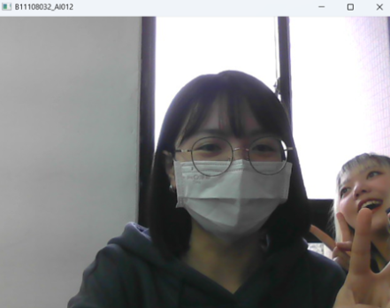

📹 Video
實際操作畫面截圖

本段示範如何使用 OpenCV 開啟筆電攝影機並即時顯示畫面。這是學習 OpenCV 的入門範例， 能幫助你快速熟悉影像擷取與處理的流程，並為更進階的 AI 功能打下基礎。
🚗 VideoCapture
實際操作畫面截圖
這段程式碼展示如何串流並顯示台灣高速公路即時攝影機的影像，適用於智慧交通分析與即時監控。 結合 OpenCV 的串流能力，能讓你的專案實現公共監控或交通分析的初步應用。
💻 程式碼展示
▶️ Video：啟用攝影機並顯示畫面
import cv2
cap = cv2.VideoCapture(0)
while cap.isOpened():
success, image = cap.read()
cv2.imshow('B11108032_AI012', image)
if cv2.waitKey(1) & 0xFF == 27:
break
cap.release()
cv2.destroyAllWindows()
▶️ VideoCapture：串流高速公路即時影像
import cv2
# cap = cv2.VideoCapture("video/RICH3.mp4")
# cap = cv2.VideoCapture(0)
cap = cv2.VideoCapture("https://cctvn.freeway.gov.tw/abs2mjpg/bmjpg?camera=13380")
while cap.isOpened():
success, frame = cap.read()
cv2.imshow("B11108032_AI021", frame)
if cv2.waitKey(1) & 0xFF == 27:
break
cap.release()
cv2.destroyAllWindows()